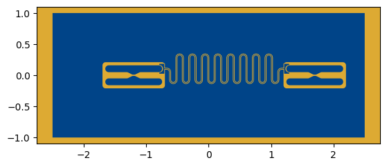

2 Transmons with resonator, Capacitance and qubit parameters computation
[1]:
%load_ext autoreload
%autoreload 2
%matplotlib inline
import os
os.environ["KMP_DUPLICATE_LIB_OK"]="TRUE"
os.environ["PMIX_MCA_gds"]="hash"
os.environ['OMPI_MCA_btl'] = 'tcp,self'
os.environ['OMPI_MCA_rmaps_base_oversubscribe'] = '1'
# Import useful packages
from qiskit_metal import designs, draw
from qiskit_metal import MetalGUI, Dict, open_docs
from SQDMetal.Utilities.QUtilities import QUtilities
import matplotlib.pyplot as plt
from SQDMetal.Comps.Qubits import TransmonTaperedInsets
from SQDMetal.Comps.Test_capacitor import Smooth_CapacitorProngPin, Smooth_Capacitor_Semicircle
from SQDMetal.Comps.Resonators import ResonatorMeanderPinPin
from SQDMetal.Utilities.QubitDesigner import ResonatorHalfWave
from qiskit_metal.analyses import cpw_calculations
from SQDMetal.Utilities.Materials import Material
from SQDMetal.Utilities.CpwParams import CpwParams
### Qubit, resonator frequencies
qubit_freq = [4.5*1e9, 4.5*1e9]
res_freq_GHZ = qubit_freq[1] + 2.3 *1e9
Design
[2]:
## Resonator design parameters
resonator = ResonatorHalfWave(res_freq_GHZ)
m = Material("siliconcryo")
# CPW parameters
cpw_width = 10e-6
cpw = CpwParams(m.permittivity, 500e-6)
cpw_gap = cpw.get_gap_from_width(cpw_width)
l_fullwave, _, _ = cpw_calculations.guided_wavelength(
freq=resonator.f0,
line_width=cpw_width,
line_gap=cpw_gap,
substrate_thickness=cpw.dielectric_thickness,
film_thickness=200e-9,
)
l_halfwave = l_fullwave / 2
print(f"Resonator length (f = {res_freq_GHZ} GHz): {l_halfwave *1e3:.2f} mm")
Resonator length (f = 6800000000.0 GHz): 8.96 mm
[ ]:
%matplotlib inline
# Set up chip design as planar
design = designs.DesignPlanar({}, overwrite_enabled=True)
# Set up chip dimensions
design.chips.main.size.size_x = '5.0mm'
design.chips.main.size.size_y = '2.0mm'
design.chips.main.size.size_z = '-280um'
design.chips.main.size.center_x = '0.0mm'
design.chips.main.size.center_y = '0mm'
# Resonator and feedline gap width (W) and center conductor width (S)
design.variables['cpw_width'] = '10 um' #S
design.variables['cpw_gap'] = '6 um' #W
#gui = MetalGUI(design)
########################################
TransmonTaperedInsets(design, 'Qubit1', options = Dict(pos_x = '-1.25mm', pos_y = '0.0mm', orientation = '0',
pocket_lower_tighten = '0.0um',pocket_height = '420um',chrgln_pin_x_offset="0um", chrgln_pin_y_offset="-10um"))
TransmonTaperedInsets(design, 'Qubit2', options = Dict(pos_x = '1.65mm', pos_y = '0.0mm', orientation = '0',
pocket_lower_tighten = '0.0um',pocket_height = '420um', chrgln_pin_x_offset="0um", chrgln_pin_y_offset="-10um"))
Smooth_Capacitor_Semicircle(design, 'Capacitor1',options=Dict(pin_inputs=Dict(start_pin=Dict(component=f'Qubit1',pin='top_right_pin')), orientation=180,
rect_width = '160um',rect_length = '80um', semi_radius = '60um',
fillet_radius = '5um',fillet_resolution = 20))
Smooth_Capacitor_Semicircle(design, 'Capacitor2',options=Dict(pin_inputs=Dict(start_pin=Dict(component=f'Qubit2',pin='top_left_pin')), orientation=0,
rect_width = '160um',rect_length = '80um', semi_radius = '60um',
fillet_radius = '5um',fillet_resolution = 20))
ResonatorMeanderPinPin(design, 'Resonator1', options = Dict(pin_inputs=Dict(start_pin=Dict(component='Capacitor1', pin='a'),
end_pin=Dict(component='Capacitor2', pin='a')),
total_length = f"{l_halfwave*1e3}mm", start_left = False,
trace_width = design.variables['cpw_width'], gap_width = design.variables['cpw_gap']))
#######################################
# Create GUI
#gui.rebuild()
design.rebuild()
[4]:
QUtilities.plot_all_components(design)
plt.show()

Capacitance Simulation
[5]:
from SQDMetal.PALACE.Capacitance_Simulation import PALACE_Capacitance_Simulation
import contextlib
import sys
from io import StringIO
#Eigenmode Simulation Options
user_defined_options = {
"mesh_refinement": 0, #refines mesh in PALACE - essetially divides every mesh element in half
"dielectric_material": "silicon", #choose dielectric material - 'silicon' or 'sapphire'
"solver_order": 2, #increasing solver order increases accuracy of simulation, but significantly increases sim time
"solns_to_save": 3, #number of solutions to save for E-field visualization - ordered by the entries in the computed capacitance matrix
"solver_tol": 1.0e-8, #error residual tolerance for iterative solver
"solver_maxits": 200, #number of solver iterations
"fillet_resolution":16, #number of vertices per quarter turn on a filleted path
"palace_dir":"~/repo/spack/opt/spack/linux-skylake/palace-0.15.0-p26f6lzvfjt4qemxgkdpjhhyogo7axk4/bin/palace",#"PATH/TO/PALACE/BINARY",
"num_cpus": 16, #number of threads to use in PALACE simulation
#e.g.: "palace_dir":"/home/prasanna/spack/opt/spack/linux-ubuntu24.04-zen2/gcc-13.2.0/palace-0.12.0-q65qvkwsa5zglixv3rmm424wqsu3mcpv/bin/palace"
}
#Create the Palace capacitance simulation
cap_sim = PALACE_Capacitance_Simulation(name = '2_transmons_wRes_comp', #name of simulation
metal_design = design, #feed in qiskit metal design
sim_parent_directory = "", #choose directory where mesh file, config file and HPC batch file will be saved
mode = 'simPC', #choose simulation mode 'HPC' or 'simPC'
meshing = 'GMSH', #choose meshing 'GMSH' or 'COMSOL'
user_options = user_defined_options, #provide options chosen above
create_files = True) #create mesh, config and HPC batch files
#Add metallic elements from layer 1 in design file
cap_sim.add_metallic(1)
#Add ground plane to simulations
cap_sim.add_ground_plane()
#Fine mesh the transmon cross qubit region
cap_sim.fine_mesh_components(['Qubit1', 'Qubit2'], min_size=12e-6, max_size=100e-6, taper_dist_min=10e-6, metals_only=False)
#Fine mesh resonator, launch pads and transmission line
cap_sim.fine_mesh_components(['Resonator1','Capacitor1','Capacitor2'], min_size=12e-6, max_size=120e-6, taper_dist_min=10e-6)
#This will prepare the mesh file and the config file
cap_sim.prepare_simulation()
capMat = cap_sim.run()
Error : Gmsh has not been initialized
Error : Gmsh has not been initialized
>> /usr/bin/mpirun -n 16 /home/leont/repo/spack/opt/spack/linux-skylake/palace-0.15.0-p26f6lzvfjt4qemxgkdpjhhyogo7axk4/bin/palace-x86_64.bin 2_transmons_wRes_comp.json
_____________ _______
_____ __ \____ __ /____ ____________
____ /_/ / __ ` / / __ ` / ___/ _ \
___ _____/ /_/ / / /_/ / /__/ ___/
/__/ \___,__/__/\___,__/\_____\_____/
--> Warning!
Output folder is not empty; program will overwrite content! (outputFiles)
Git changeset ID: b676277
Running with 16 MPI processes
Device configuration: cpu
Memory configuration: host-std
libCEED backend: /cpu/self/xsmm/blocked
Added 1128 boundary elements for material interfaces to the mesh
Finished partitioning mesh into 16 subdomains
Characteristic length and time scales:
Lc = 6.000e-03 m, tc = 2.001e-02 ns
Mesh curvature order: 1
Mesh bounding box:
(Xmin, Ymin, Zmin) = (-3.000e-03, -1.200e-03, -2.800e-04) m
(Xmax, Ymax, Zmax) = (+3.000e-03, +1.200e-03, +2.800e-04) m
Parallel Mesh Stats:
minimum average maximum total
vertices 2240 2650 2939 42414
edges 16179 17320 18508 277120
faces 28065 29055 30271 464891
elements 14061 14386 14702 230184
neighbors 3 5 9
minimum maximum
h 0.000296999 0.0313019
kappa 1.02042 92.4409
Configuring Dirichlet BC at attributes:
10-15, 1-6
Assembling system matrices, number of global unknowns:
H1 (p = 2): 319534, ND (p = 2): 1484022, RT (p = 2): 2085225
Operator assembly level: Partial
Mesh geometries:
Tetrahedron: P = 20, Q = 11 (quadrature order = 4)
Assembling multigrid hierarchy:
Level 0 (p = 1): 42414 unknowns
Level 1 (p = 2): 319534 unknowns
Computing electrostatic fields for 6 terminal boundaries
It 1/6: Index = 1 (elapsed time = 1.66e-07 s)
Residual norms for PCG solve
0 KSP residual norm ||r||_B = 2.448392e+01
1 KSP residual norm ||r||_B = 2.121257e+00
2 KSP residual norm ||r||_B = 2.539193e-01
3 KSP residual norm ||r||_B = 4.098513e-02
4 KSP residual norm ||r||_B = 8.845225e-03
5 KSP residual norm ||r||_B = 2.156941e-03
6 KSP residual norm ||r||_B = 5.551920e-04
7 KSP residual norm ||r||_B = 1.567196e-04
8 KSP residual norm ||r||_B = 3.739797e-05
9 KSP residual norm ||r||_B = 8.646898e-06
10 KSP residual norm ||r||_B = 2.243936e-06
11 KSP residual norm ||r||_B = 5.988850e-07
PCG solver converged in 11 iterations (avg. reduction factor: 1.697e-01)
Sol. ||V|| = 3.122235e+02 (||RHS|| = 1.780161e+02)
Field energy E = 1.035e-09 J
Wrote fields to disk (Paraview) for source 1
Updating solution error estimates
It 2/6: Index = 2 (elapsed time = 6.59e+00 s)
Residual norms for PCG solve
0 KSP residual norm ||r||_B = 5.905616e+00
1 KSP residual norm ||r||_B = 7.014801e-01
2 KSP residual norm ||r||_B = 1.434889e-01
3 KSP residual norm ||r||_B = 3.431404e-02
4 KSP residual norm ||r||_B = 8.626627e-03
5 KSP residual norm ||r||_B = 2.194025e-03
6 KSP residual norm ||r||_B = 5.414656e-04
7 KSP residual norm ||r||_B = 1.075673e-04
8 KSP residual norm ||r||_B = 2.274393e-05
9 KSP residual norm ||r||_B = 4.356246e-06
10 KSP residual norm ||r||_B = 1.082311e-06
11 KSP residual norm ||r||_B = 2.659825e-07
PCG solver converged in 11 iterations (avg. reduction factor: 1.729e-01)
Sol. ||V|| = 1.235568e+02 (||RHS|| = 6.452242e+01)
Field energy E = 3.550e-11 J
Wrote fields to disk (Paraview) for source 2
Updating solution error estimates
It 3/6: Index = 3 (elapsed time = 1.47e+01 s)
Residual norms for PCG solve
0 KSP residual norm ||r||_B = 5.871942e+00
1 KSP residual norm ||r||_B = 7.117299e-01
2 KSP residual norm ||r||_B = 1.378763e-01
3 KSP residual norm ||r||_B = 3.403832e-02
4 KSP residual norm ||r||_B = 1.020005e-02
5 KSP residual norm ||r||_B = 2.733200e-03
6 KSP residual norm ||r||_B = 6.376058e-04
7 KSP residual norm ||r||_B = 1.448014e-04
8 KSP residual norm ||r||_B = 3.438152e-05
9 KSP residual norm ||r||_B = 7.344243e-06
10 KSP residual norm ||r||_B = 1.734110e-06
11 KSP residual norm ||r||_B = 3.267723e-07
PCG solver converged in 11 iterations (avg. reduction factor: 1.762e-01)
Sol. ||V|| = 1.243390e+02 (||RHS|| = 6.410218e+01)
Field energy E = 3.409e-11 J
Wrote fields to disk (Paraview) for source 3
Updating solution error estimates
It 4/6: Index = 4 (elapsed time = 2.17e+01 s)
Residual norms for PCG solve
0 KSP residual norm ||r||_B = 8.611613e+00
1 KSP residual norm ||r||_B = 9.223523e-01
2 KSP residual norm ||r||_B = 9.557595e-02
3 KSP residual norm ||r||_B = 1.722228e-02
4 KSP residual norm ||r||_B = 3.675845e-03
5 KSP residual norm ||r||_B = 8.407168e-04
6 KSP residual norm ||r||_B = 1.993362e-04
7 KSP residual norm ||r||_B = 5.078951e-05
8 KSP residual norm ||r||_B = 1.422766e-05
9 KSP residual norm ||r||_B = 3.126110e-06
10 KSP residual norm ||r||_B = 6.010530e-07
PCG solver converged in 10 iterations (avg. reduction factor: 1.502e-01)
Sol. ||V|| = 1.471850e+02 (||RHS|| = 1.026553e+02)
Field energy E = 2.946e-10 J
Updating solution error estimates
It 5/6: Index = 5 (elapsed time = 2.78e+01 s)
Residual norms for PCG solve
0 KSP residual norm ||r||_B = 5.885579e+00
1 KSP residual norm ||r||_B = 7.010339e-01
2 KSP residual norm ||r||_B = 1.350799e-01
3 KSP residual norm ||r||_B = 2.758399e-02
4 KSP residual norm ||r||_B = 5.499763e-03
5 KSP residual norm ||r||_B = 1.050490e-03
6 KSP residual norm ||r||_B = 2.017101e-04
7 KSP residual norm ||r||_B = 3.566719e-05
8 KSP residual norm ||r||_B = 8.086616e-06
9 KSP residual norm ||r||_B = 1.687743e-06
10 KSP residual norm ||r||_B = 3.348761e-07
PCG solver converged in 10 iterations (avg. reduction factor: 1.484e-01)
Sol. ||V|| = 1.235942e+02 (||RHS|| = 6.470774e+01)
Field energy E = 3.553e-11 J
Updating solution error estimates
It 6/6: Index = 6 (elapsed time = 3.40e+01 s)
Residual norms for PCG solve
0 KSP residual norm ||r||_B = 5.848285e+00
1 KSP residual norm ||r||_B = 6.882317e-01
2 KSP residual norm ||r||_B = 1.319430e-01
3 KSP residual norm ||r||_B = 2.820304e-02
4 KSP residual norm ||r||_B = 6.694378e-03
5 KSP residual norm ||r||_B = 1.687664e-03
6 KSP residual norm ||r||_B = 3.815532e-04
7 KSP residual norm ||r||_B = 7.460119e-05
8 KSP residual norm ||r||_B = 1.744350e-05
9 KSP residual norm ||r||_B = 3.228566e-06
10 KSP residual norm ||r||_B = 6.319365e-07
PCG solver converged in 10 iterations (avg. reduction factor: 1.582e-01)
Sol. ||V|| = 1.243491e+02 (||RHS|| = 6.419542e+01)
Field energy E = 3.409e-11 J
Updating solution error estimates
Completed 0 iterations of adaptive mesh refinement (AMR):
Indicator norm = 4.245e-01, global unknowns = 319534
Max. iterations = 0, tol. = 1.000e-02
Elapsed Time Report (s) Min. Max. Avg.
==============================================================
Initialization 0.052 0.085 0.062
Mesh Preprocessing 1.859 1.860 1.859
Operator Construction 0.261 0.283 0.273
Linear Solve 0.727 0.976 0.804
Setup 1.134 1.135 1.134
Preconditioner 5.472 6.030 5.870
Coarse Solve 0.208 0.537 0.301
Estimation 0.112 0.145 0.139
Construction 3.493 3.502 3.497
Solve 27.275 27.276 27.276
Postprocessing 1.613 1.619 1.615
Paraview 4.058 4.060 4.059
Disk IO 0.960 0.970 0.962
--------------------------------------------------------------
Total 47.920 47.922 47.920
Error in plotting: 'Data array (V) not present in this dataset.'
[6]:
#Display the indices of the conductors to match with capacitance matrix - it will be automatically generated with the output anyway
cap_sim.display_conductor_indices()
plt.show()

[7]:
# Gives qubit parameters
results = cap_sim.calc_params_2_floating_transmons(print_all_capacitances=True,
qubit_freq=(qubit_freq),
res = resonator
)
###
Capacitance Results
--------------------
C1-Ground = 73.452 fF
C2-Ground = 79.691 fF
C3-Ground = 73.500 fF
C4-Ground = 79.727 fF
CQ1 = 78.826 fF
CQ2 = 78.839 fF
Cg1 = 7.124 fF
Cg2 = 7.163 fF
C_r = 1445.730 fF
C1_prime = 85.915 fF
C2_prime = 85.967 fF
C_r_prime = 1458.830 fF
Cg1_prime = 8800.541 fF
Cg2_prime = 8757.446 fF
Readout Resonator
-------------------
f_res = 6.800 GHz
L_res = 745.009 pH
C_res = 735.294 fF
Circuit Parameters
-------------------
f_qubit1 = 4.500 GHz
f_qubit2 = 4.500 GHz
E_C1 = 225.457 MHz
E_C2 = 225.321 MHz
E_Cc = 0.183 MHz
g1 = 82.732 MHz
g2 = 83.176 MHz
Target Junction Parameters
(for f_qubit1 = 4.5 GHz)
--------------------------
E_J1 = 12.380 GHz
L_J1 = 13.203 nH
E_J1/E_C1 = 54.912
Target Junction Parameters
(for f_qubit2 = 4.5 GHz)
--------------------------
E_J2 = 12.387 GHz
L_J2 = 13.196 nH
E_J2/E_C2 = 54.975
Q1-Q2 g12 = 0.006 GHz
Q1-res g1 = 301.813 MHz
Q2-res g2 = 303.386 MHz
Q1 freq (uncoupled) = 4.500 GHz
Q2 freq (uncoupled) = 4.500 GHz
Res freq (uncoupled) = 30.333 GHz
Z on/off ratio = 1.121
[8]:
print('Res_ground: ',capMat[0,3]*1e15, 'fF')
print('Pad1 to pad2: ',capMat[1,2]*1e15, 'fF')
print('Res to pad1: ',capMat[1,3]*1e15, 'fF')
print('Res to pad2: ',capMat[2,3]*1e15, 'fF')
Res_ground: -1445.730348239 fF
Pad1 to pad2: -35.65852572964 fF
Res to pad1: -17.64799832657 fF
Res to pad2: -2.3543623043 fF
[9]:
resonator.get_res_inductance()
[9]:
7.450087032524837e-10